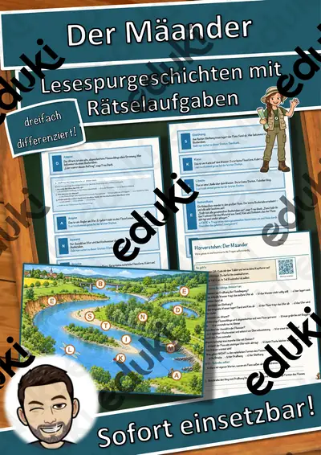
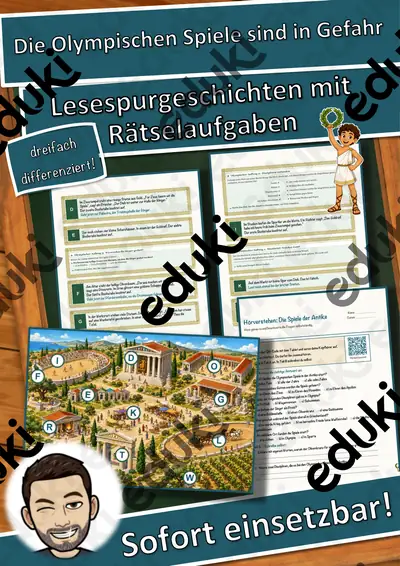

Lesespur: Kunst der Antike: Vasen und Tempel – Lesespurgeschichte mit Rätseln (Klasse 6)
Kunst der Antike – Vasen und Tempel – Lesespurgeschichte Kunst (Klasse 6)Begib dich mit deiner Klasse auf eine spannende Lesespur durch ein Antikenmuseum! Melina und Linus reisen ins alte Griechenland und fragen sich, warum so viele Museen und Banken wie griechische Tempel aussehen: Im Vasensaal entdecken sie Amphore und Krater, in der Malerwerkstatt den Unterschied zwischen schwarzfiguriger und rotfiguriger Vasenmalerei, und an der Ornamentwand den endlosen Mäander. Am Tempelmodell lernen sie Sockel, Säulen, Fries und Giebel kennen, in der Säulenhalle die dorische, ionische und korinthische Ordnung, im Skulpturensaal Standbein und Spielbein und die überraschend bunten Statuen, und im Mosaikraum, wie die Römer die griechische Kunst weitergeführt haben. Ihre Amphore Phori ist immer dabei. Am Ende jedes Abschnitts verrät ein Hinweis den nächsten Ort auf dem Museumsplan – nur wer richtig liest und mitdenkt, findet den Weg und sammelt alle geheimen Buchstaben zum Lösungswort.
Die perfekte Lesespur für den KUNSTUNTERRICHT der 6. Klasse – ideal als Einstieg in die Kunst der Antike und passend zum Geschichtsunterricht: Sie verbindet motivierendes, sinnentnehmendes Lesen mit Kunstgeschichte und genauem Hinsehen. Das Material ist SOFORT EINSETZBAR und in DREI DIFFERENZIERUNGSSTUFEN (leicht ★ / mittel ★★ / schwer ★★★) angelegt.WICHTIG: Das komplette Material ist sowohl in FARBE als auch in SCHWARZ-WEISS enthalten – ideal zum Sparen von Druckkosten.DAS IST ENTHALTEN
- Lesespurgeschichte in 3 Niveaus (leicht, mittel, schwer)
- farbiger Museumsplan als Suchkarte
- Hörverstehen mit QR-Code zur MP3 (selbstständiges Hören mit Kopfhörern)
- vier Aufträge auf dem Weg: ein Verbinde-Rätsel, ein Quiz, eine Rechenaufgabe und ein Steckbrief
- Rätselseite (Wörter-Suchsel + Wissensfragen)
- Ausmalbild zum Thema
- ausführliches Lösungsblatt für die Lehrkraft
- alles zusätzlich als komplette Schwarz-Weiß-VarianteSO GEHT DIE LESESPURDie Kinder lesen ab START, entnehmen dem Text einen Hinweis auf einen Ort im Museum, suchen ihn auf dem Plan und lesen bei dieser Station weiter. An jeder richtigen Station gibt es einen Sammelbuchstaben. Eingebaute Sackgassen (Garderobe, Museumscafé, Buchladen, Schließfächer) gehören zwar zum Museum, sind aber keine Stationen und dienen der Selbstkontrolle. Am Ende werden die gesammelten Buchstaben umgestellt und ergeben ein geheimes Lösungswort. (Die Lösungen sind selbstverständlich nur im Lösungsblatt für die Lehrkraft enthalten.)INHALTLICHER SCHWERPUNKTDie Kinder lernen griechische Vasenformen und ihre Bildsprache kennen, unterscheiden schwarz- und rotfigurige Malerei, erkennen das Mäander-Ornament, den Aufbau des griechischen Tempels und die drei Säulenordnungen, verfolgen die Entwicklung der Skulptur von der steifen Figur zum Standbein-Spielbein-Motiv und entdecken, wie die Römer die griechische Kunst weitergeführt haben.ABGEDECKTER LEHRPLAN (Klasse 6, Kunst)
- Kunst (LehrplanPLUS Bayern) – Klasse 6 „Kunst der Antike“: griechische Vasen und ihre Bildsprache kennen, Aufbau des Tempels und die drei Säulenordnungen unterscheiden, die Entwicklung der Skulptur beschreiben und das Weiterleben der Antike bei den Römern und bis heute erkennen.
- Deutsch – Lesen mit Texten und Medien umgehen: Lesestrategien anwenden, Texten gezielt Informationen entnehmen, sinnentnehmend und selektiv lesen; Zuhören: einem Sachhörtext konzentriert folgen (Hörverstehen mit MP3).
- Mathematik – Rechnen im Sachzusammenhang.
- Fächerübergreifend / Kompetenzen: Geschichte (Antike Griechenland und Rom), Architektur im eigenen Umfeld, genaues Lesen und Prüfen, kreatives Gestalten (Ausmalbild).
Geeignet für Freiarbeit, Stationenlernen, Vertretungsstunden, Wochenplan, Projekttage und Homeschooling. Klassenstufe 6 (differenziert einsetzbar auch in Klasse 5 und 7).
Ähnliche Materialien

Tempel – Hörverstehen mit Lückentext (interaktiv)

Tempel Lückentext mit Wortspeicher Hörverstehen und Suchsel

Altes Griechenland Lückentext mit Wortspeicher Hörverstehen und Suchsel

Lesespur: Der Mäander – Lesespurgeschichte mit Rätseln (Klasse 8)

Krater Lückentext mit Wortspeicher Hörverstehen und Suchsel

Lesespur: Die Olympischen Spiele sind in Gefahr – Lesespurgeschichte mit Rätseln (Klasse 6)

Lesespur: Die Mission auf dem Olymp – Lesespurgeschichte mit Rätseln (Klasse 6)